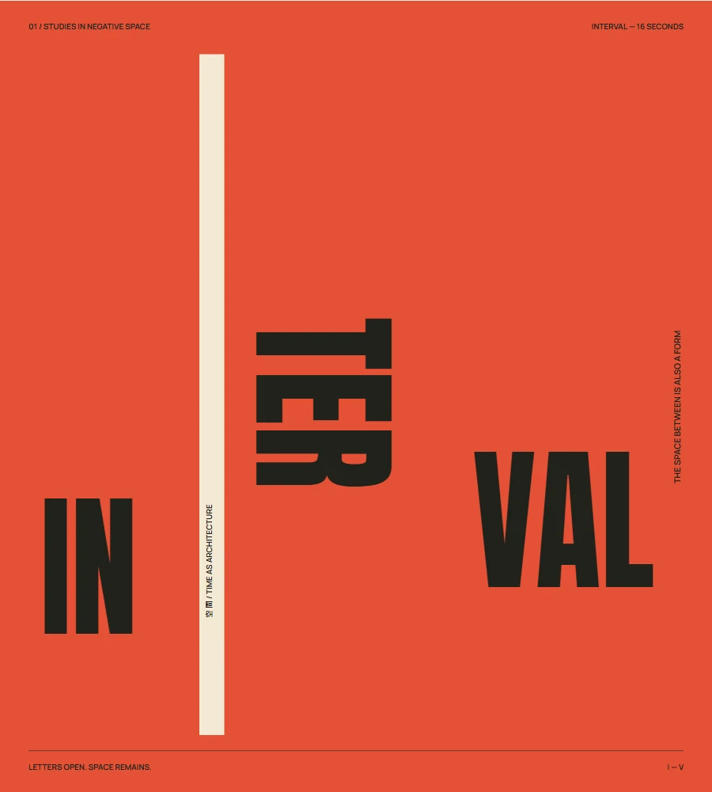
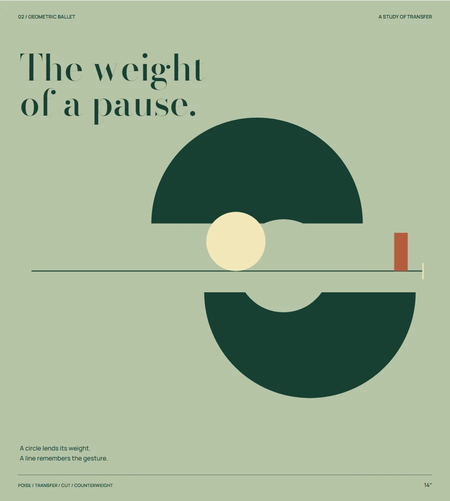
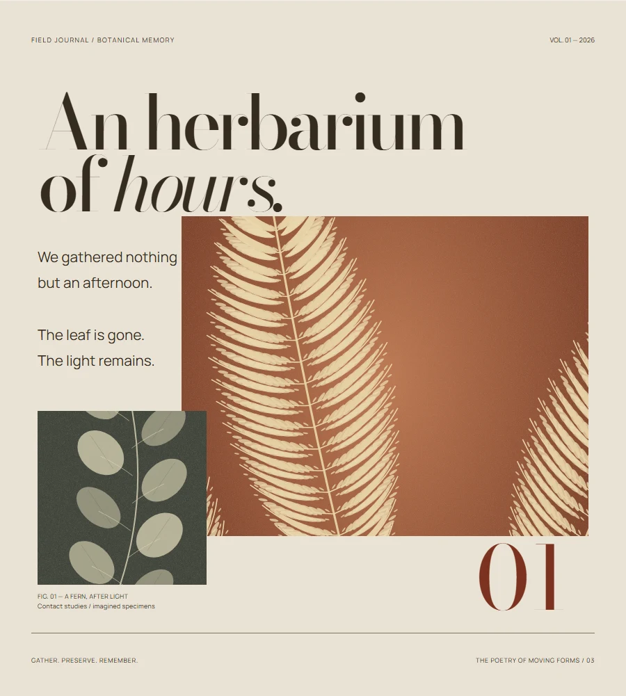
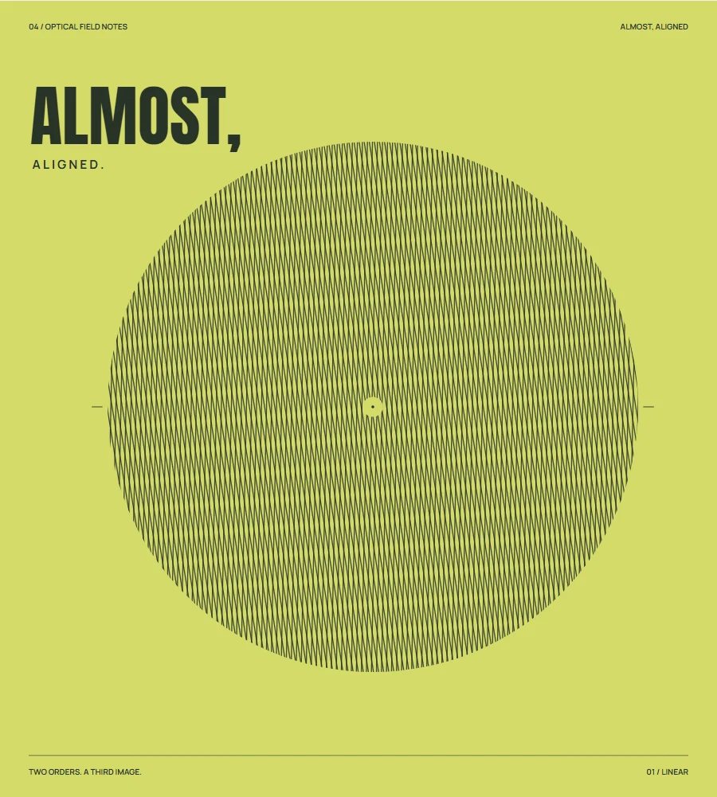
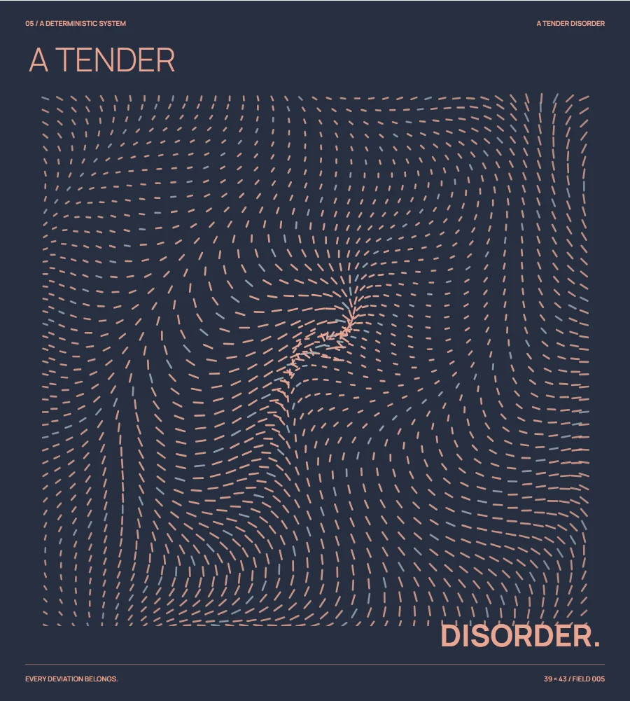
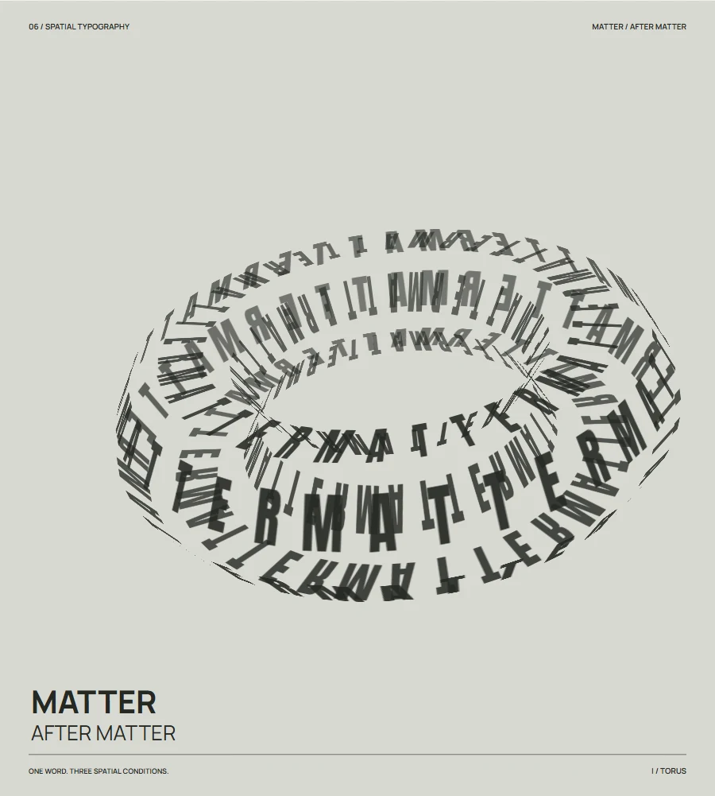

Time, made
visible.
Six studies in the poetry of moving forms. An exploration of what happens when time becomes a material of graphic design.
六件動態海報。
關於字體、秩序，以及空間之間的停頓。
The poetry of moving formsSelected studies / 01—06
01 / Typographic choreography16″ loop

Interval
The architecture of moving lettersView study
02 / Geometric ballet14″ loop

The weight of a pause
A choreography of pure formsView study
03 / Living editorial18″ loop

An herbarium of hours
A magazine that refuses to stay stillView study
04 / Moiré kinetics20″ loop

Almost, aligned
The geometry of optical interferenceView study
05 / Controlled chaos16″ loop

A tender disorder
The emergence of orderView study
06 / Infinite typographic sculpture18″ loop

Matter / after matter
Letters beyond the planeView study